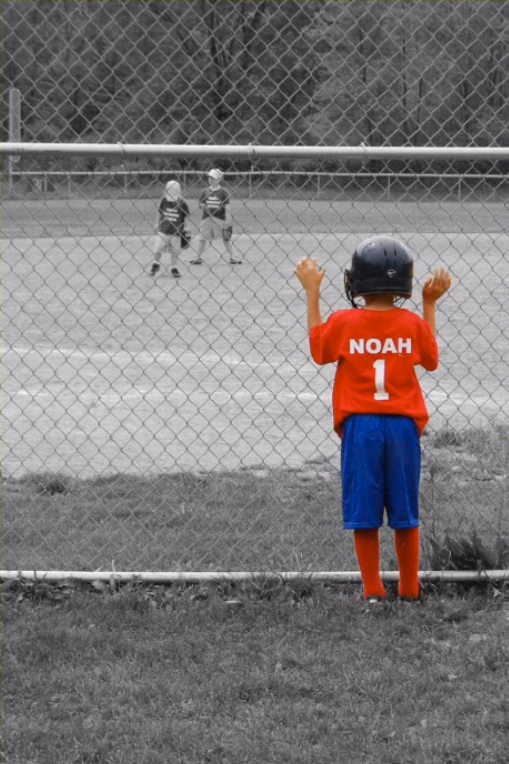
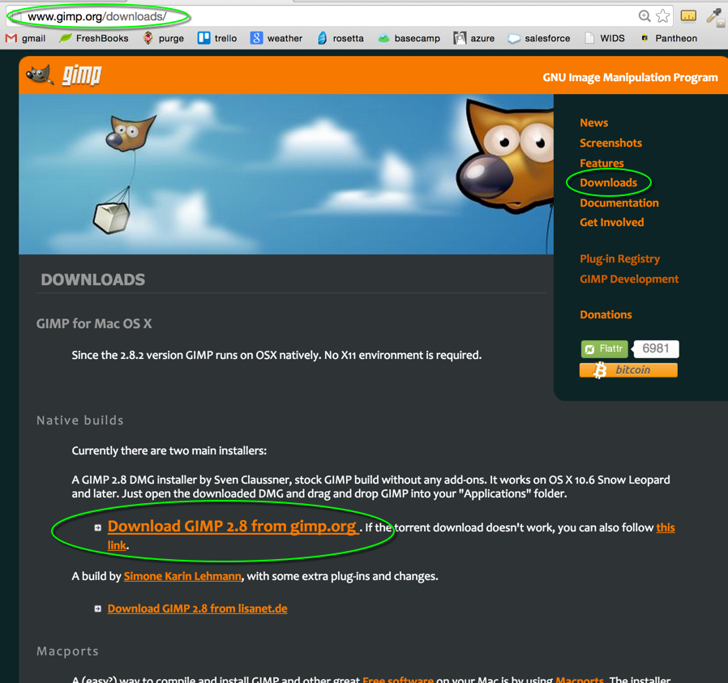
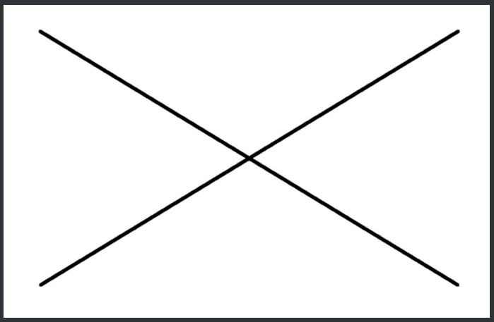
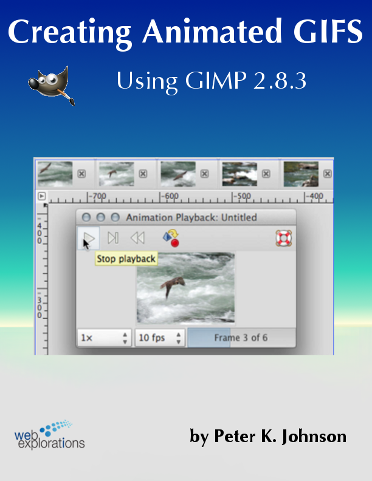
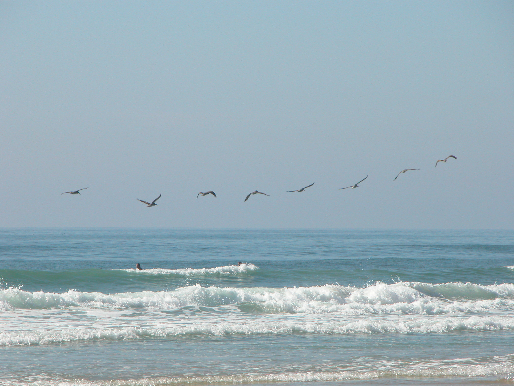
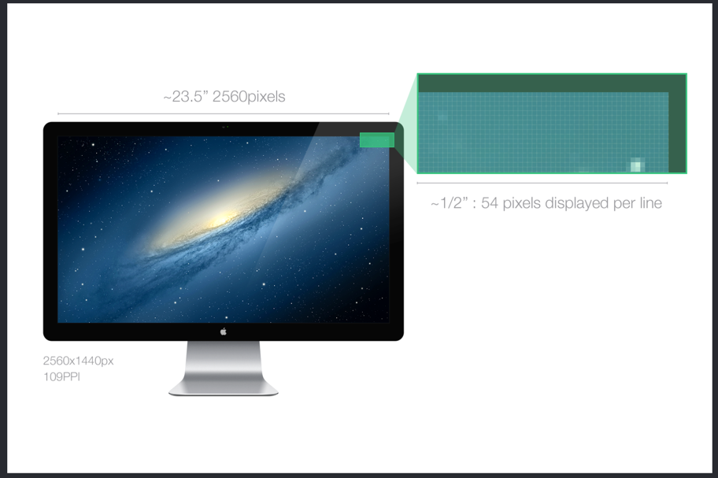
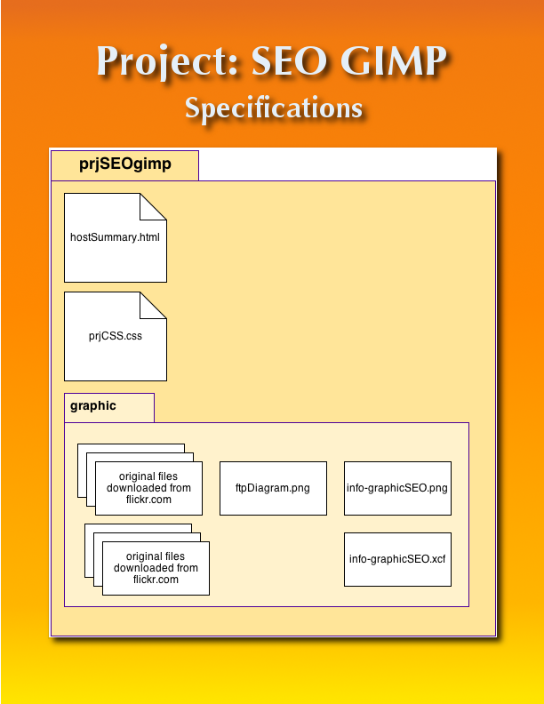

Edit Graphics |
|
Using GIMP - The free photo editor. |

In this module you will learn:

- How to increase the SEO of a web site.
- Use a photo editor to create graphics suitable for web use.
- Download and install GIMP
- Modify a digital photo so it is web-ready.
- Work with layers.
- Create custom gradients.
- Create montage images
- Create animated gifs
WII-FM (What's In It - For Me)
When was the last time you saw a web page without graphics?. Images are what make your web pages interesting. Knowing how to use a photo editor is a critical skill for web development.
If you have access to Adobe Photoshop you will find that even though the GIMP commands are different, the basic concepts are all the same, especially when using layers, selection tools, and filters. Feel free to use Photoshop if you prefer.
Complete these Learning Activities:
Total estimated time for this module: 9 hours.
Work through Tutorial:SEO to learn more about Search Engine Optimization.
Estimated Time: 30 minutes
Work through Tutorial:SEO to learn more about Search Engine Optimization.
Look at the History of SEO to get a feel of how SEO works in today's world..
Estimated Time: 15 minutes
Look at the History of SEO.
Complete the Tutorial: Getting Images from the Web - A short tutorial showing how to find free photos using Flickr.com and creative commons licensing.
You'll learn how to use the photos on flickr.com using advanced search for Creative Commons images.
You will need to know this technique in order to complete the graded project.
Estimated Time: 30 minutes
Complete the Tutorial: Getting Images from the Web .
Here is the GIMP Manual - a free, on-line book that you can use as a quick reference.
And, if you want to learn more about GIMP after you finish this module, here is a list of GIMP reference books.
Keep the GIMP Manual handy so you can refer to it as you use the program.
Install GIMP on your system. You can download the newest version here: gimp.org/downloads.

(Click on the image for a larger view.)
Warning: Only download from this site. GIMP is open-source and people can install malware into the program and offer it for download on their site. Don't be duped. Only download this program from gimp.org/downloads
Estimated Time: 30 minutes.
Install GIMP on your system. You can download the newest version here.
Learn these Gimp Lite Quickies to learn some basic photo editing techniques such as:
- Change the size of an image - Scale
- Make jpg files smaller
- Crop an image
- Find stats about your image (file size, dimensions)
- Flip and rotate an image
Estimated Time: 1 hour
Learn these Gimp Lite Quickies.

Estimated Time: 30 minutes
Work through this simple Straight Line Tutorial to learn how.
Work through the Tutorial: Using Layers with GIMP.
Learn how to:
- Open up an image
- Resize an image
- Add text to an image
Here is the high resolution photo - funDayParadeBoy.jpg that is used in the tutorial (Right-mouse click, "Save image as")
Estimated Time:2 hours.
Work through the Tutorial: Using Layers with GIMP.
Complete this tutorial to learn how to create a montage using GIMP.
You'll learn how to:
- Use the fuzzy selection tool
- How to build an image using layers
- How to resize images
- How to copy and paste selections, and crop images.
The techniques you learn in this tutorial will help you complete future projects for this course as well as give you valuable skills for image manipulation on your own site.
Estimated Time: 2 hours
Complete this tutorial to learn how to create a montage using GIMP.

Here is a zip file with the original images used in the tutorial (hawkImage4BuildAnimatedGIFUsingGIMP.zip).
Estimated Time: 2 hours.
Work through Tutorial: Create An Animated GIF Using GIMP to learn how you can create animated photos.

OPTIONAL: Convert your portrait to a pencil drawing Tutorial: From Photo to Pencil Drawing Using GIMP.
Click on the images for a larger view.
Estimated Time: 2 hours
OPTIONAL: Convert your portrait to a pencil drawing.

Estimated Time: 1 hour
Learn these Gimp Lite Quickies.
OPTIONAL: Watch this video to learn how to Create a photo with Selective Colorization.
This can be very effective an eye-catching on your website without being distracting (like an animated graphic can be.)
Estimated Time: 30 min.
OPTIONAL: Watch this video to learn how to Create a photo with Selective Colorization.
Your Graded Assignments For This Module
Take the Graded Quiz: WebComm
- There will be 10 true/false and multiple choice questions.
- 10 questions - 10 minutes - 10 points
- Feel free to use your book or look stuff up on the Web or try things out on your computer.
- You will have one chance to take the quiz.
- The questions will be from the same database that the self-quiz uses.
- The quiz will be scored automatically and your points shown in your D2L grade book.
Estimated Time: 10 minutes
Look on the Course Map for the due date for this graded activity.

Remaining work to be done:
- Create an info-graphic showing SEO tips demonstrating your use of GIMP to build a montage
- Add this to the hostInfo.html web page.
- Update the t.server with the updated page.
What should be on my web site?
- Your resume page (index.html)
- The hostInfo.html page with the graphic showing how FTP works, the web host comparison, and the SEO Tips graphic
- The external style sheet that all your web pages will be using. (You created this for Project:CSS)
- A graphic folder with all the images in it.
Look on the Course Map for the due date for this graded activity.

Your Tip-Of-The-Week
(Click on the lightbulb to reveal the tip.)
Pixlr.com - An free, online photo editor.
Want to make some fast edits? Bookmark this URL to Pixlr.com giving you instant access to a really powerful editor.
You can use the Advanced Editor which is very much like Photoshop or you can use the Efficient version for quick edits and image size changes.
What's Next?
Making lists of things. The basic element for building menus on your pages.